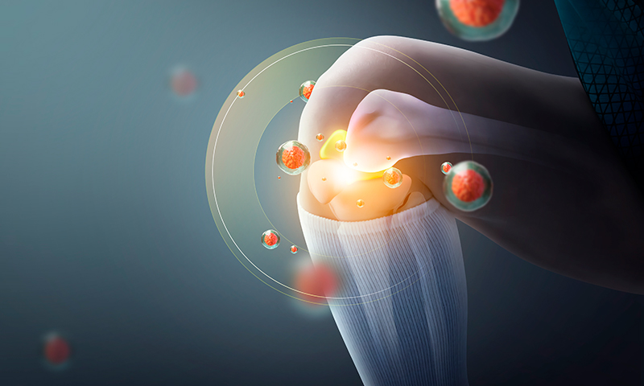

무릎줄기세포주사

무릎 줄기세포
보건복지부 신의료기술로 통과된 치료로 환자의 장골능에서 골수를 추출하여 원심분리기로 환자에게 채취한 골수 혈액을 농축, 분리하여 연골 손상부위에 주사를 주입하는 방식의 비수술적 치료방법입니다.
무릎줄기세포 시술 후 주의사항
- 시술 후 2-5일 동안 통증이 유발될 수 있습니다. 7일 이상 지속 될 경우 시술 부위 주변으로 따뜻한 찜질이 통증 완화에 도움됩니다.
- 2주간 시술부위에 압력이나 자극은 피해주세요.
- 최소 2주간 줄기세포재생 효과를 방해하는 NSAID 소염제는 복용을 최대한 피해주세요.

- 시술 부위 통증이 심하다면 타이레놀(아세트아미노펜) 진통제를 복용해주세요.
- 줄기세포재생 효과를 위해 한달 정도 금주해주세요